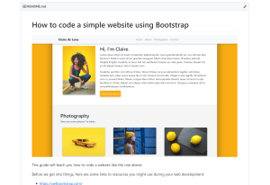
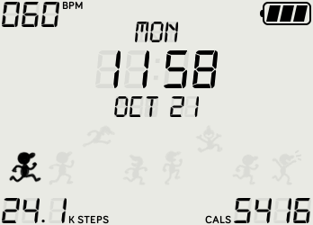
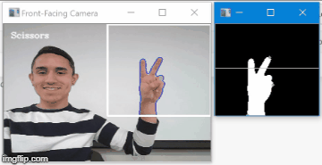
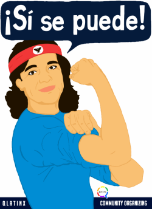
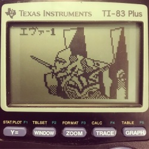

Overview
Hi! I'm Ishmael, but you can call me Ish. I'm a senior at Boston University actively seeking full-time software engineering roles.
Here's a quick summary of my CV:
// It's wrong to treat people as objects, so I make sure to treat myself with class
public class Ish {
public String name = "Ishmael Perez";
private class Education {
String school = "Boston University";
String degree = "B.A. in Computer Science";
String gradDate = "May 2020";
float gpa = 3.23;
}
private class WorkExperience {
Job driftInternship = new Job("Software Engineer Intern", "Drift.com");
driftInternship.startDate = "July 2019"
driftInternship.endDate = null;
driftInternship.tasks = {
"Developed prototype for Drift Video app on Android from using Kotlin in Android Studio,
setting foundation for reaching countless new customers who use Android",
"Now design test suites for Drift's iOS app using Xcode's XCUITest framework
to catch bugs before releasing updates to production",
};
Job siemensInternship = new Job("Technical Intern", "Siemens AG");
siemensInternship.startDate = "September 2017"
siemensInternship.endDate = "March 2019"
siemensInternship.tasks = {
"Back end Apex development for process automation and data storage",
"Front end Visualforce development for websites and forms used by Siemens teams",
"Maintenance of code quality by refactoring legacy code and creating robust test classes"
}
}
private class Links {
Link resume = new Link("https://ishfulthinking.com/files/resume.pdf");
Link linkedin = new Link("https://www.linkedin.com/in/ishfulthinking/");
Link github = new Link("https://github.com/ishfulthinking");
Email personalEmail = new Link("ishmaelkperez@gmail.com");
}
}Education
I should start off with my schooling, since I'm spending a lot of money for the special piece of paper they hand me when I walk across the stage.
B.A. in Computer Science from Boston University
Expected graduation: May 2020 | GPA: 3.23
- Completed coursework includes algorithm analysis, data structures, software engineering, mobile app development, computer networks, and artificial intelligence
Work Experience
I hold two internships under my belt and have coded in both the front-end and back-end:
Software Engineer Intern at Drift.com
July 2019 - Present | Boston, MA
- I built the prototype for the Drift Video app on Android using Kotlin in Android Studio. While building it from scratch, I referenced the existing iOS app to guarantee existing use cases were replicated and reliably implemented. Completion of this project set the foundation for reaching countless new customers who use Android devices.
- While building the app in Android, I implemented the OkHttp and CameraX libraries to handle HTTP requests/JSON parsing and video recording respectively. I then verified HTTP request/response correctness using the Postman tool.
- I currently do quality assurance and front end development by building comprehensive test suites for Drift's iOS app. These tests are coded using the XCUITest framework on Xcode and have prevented bugs from shipping to production, which upholds Drift's high quality standards.
Technical Intern at Siemens AG
July 2019 - Present | Orlando, FL
- I coded back-end triggers and classes to automate data processing in the company’s Salesforce environment, which has saved countless hours and overhead costs by automating processes that were previously performed by hand (e.g. data entry and invalid data removal in the wind energy division) using the Java-like Apex and SQL-like SOQL languages.
- When Siemens teams needed maintenance requests, their forms would sometimes pass invalid data into the back end. To rectify this, I created and refactored forms using the HTML-like Visualforce language and modified the existing back end code to filter invalid data and work more efficiently.
Extracurriculars
I also do things outside of school and work, I promise! Here are some of the things I do as extracurriculars:
Wallbreakers Trainee Mentor
October 2019 - Present
- Having been a previous trainee, I know how helpful Wallbreakers software engineering training program is. I hold weekly online office hours where I guide students through Leetcode problems to strengthen their grasps on algorithm analysis and data structures, both of which relate directly to their future careers in software engineering.
- I do resume reviews whenever needed, especially before students are referred to companies so they put their best foot forward when applying. I also conduct mock interviews with these students to strengthen both their technical and soft skills.
Facebook Above & Beyond Computer Science Program Trainee
September 2019 - Present
- I complete coding assignment sets and visit the Facebook offices weekly to strengthen my coding and review skills related to acing coding interview.
Member of the Society of Hispanic Professional Engineers (SHPE)
June 2019 - Present
- I regularly attend and volunteer at extracurricular events such as workshops and community events to support the communities that are underrepresented in STEM, especially the Hispanic/Latinx community.
- I was one of fewer than 10 students who received the SHPE Chevron scholarship this 2019-2020 academic year!
Wallbreakers Software Engineering Program Trainee
April 2019 - June 2019
- I completed weekly coding problem sets to strengthen my skills in runtime analysis, hash maps, graphs, linked lists, trees, etc... you name it, we practiced it!
- I regularly participated in homework and career-related discussions to help other students, especially students new to CS. I also created a guide to help them get acquainted with Git and submit their assignments to Github for instructor review.
Member of Upsilon Pi Epsilon (UPE) Computer Science Honor Society
March 2019 - Present
- I meet weekly with other club members to work on projects, solve coding problems, and mentor underclassmen.
Co-Founder and Membership Coordinator for QLatinx
July 2016 - October 2018
OK, this one isn't CS-related, but it's something I'm very proud of.
- After the Pulse Nightclub tragedy in June of 2016, I met with community members to develop ways to support the Latinx and LGBTQ communities. We built this nonprofit together and met weekly to hold workshops, health fairs, and develop activism/advocacy skills in our membership. Since then, it's grown large and has been recognized nationally!
- I created and developed the Community Cocina cooking class series in which I worked with a local chef to cook Latin American countries' signature dishes and teach the community about Latinx culture. The program was accessible to all and grew to be our most popular program, serving hundreds of people over its lifetime. It ran monthly and still runs to this day!
Projects
My GitHub account has multiple projects I've worked on, whether that's for fun, a school assignment, or simply to practice a new skill.
You can also find a full list of my personal passion projects here.

Creating a Website with Bootstrap Guide |

Fitbit Ionic Clock Faces - Fit & Bit |

Python Hand Recognition Guide |

Dijkstra's Algorithm three.js Visualization |
Music
I play piano and cover pop, video game, and indie rock songs. I typically arrange by ear and challenge myself to play more technically with each cover.
My YouTube channel has videos of my piano covers.
Art
I love illustration and have done a few myself. I also really like to draw on my TI-83 calculator, whether that's portraits or typical pixel art.
My art can be found on my Tumblr blog.
TI-83 Me and My Friends |

Dolores Huerta Illustration |

TI-83 Evangelion Unit 1 |
Contact
I'm flattered that you want to speak with me! Feel free to connect and chat with me through any of the following ways, whether that's to suggest something, offer some praise, or complain. I appreciate all feedback 👍🏽
- Email: ishmaelkperez@gmail.com
- LinkedIn: https://www.linkedin.com/in/ishfulthinking/
- Github: https://github.com/ishfulthinking
If you like my work so much you want to financially support me as a broke college student, feel free to donate to my Paypal 🥺